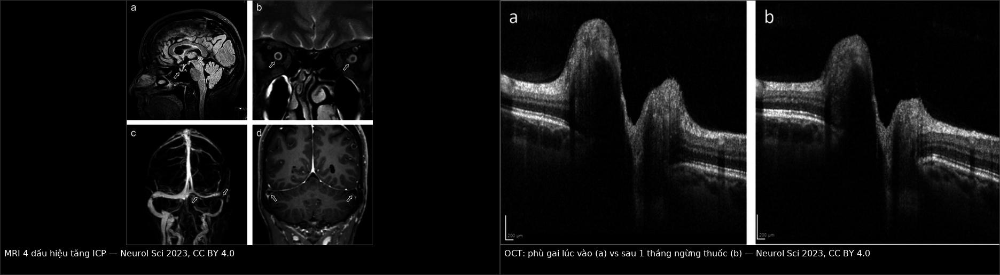
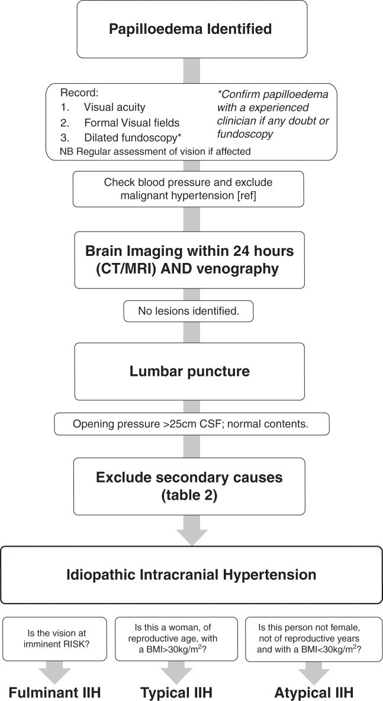
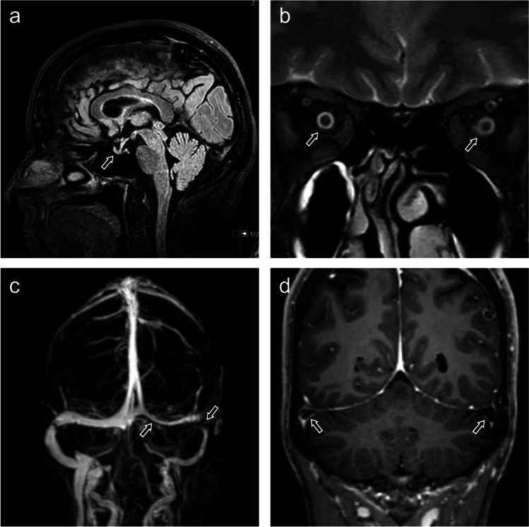
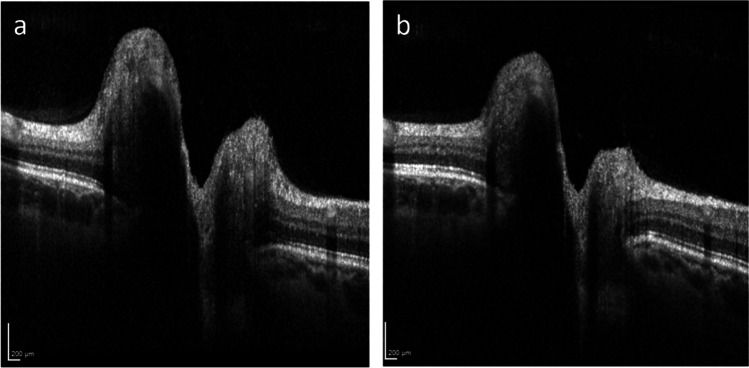

3021 — Tăng áp lực nội sọ THỨ PHÁT: thuốc, thiếu máu, ngưng thở khi ngủ — khi nào KHÔNG được gọi là IIH
Tags: pattern:phu-gai-thi pattern:hep-xoang-tinh-mach vung:gai-thi anatomy:gai-thi score:Frisen protocol:MRV protocol:OCT-RNFL
Mức chắc chắn (certainty): tổng hợp y văn (literature synthesis) — ghép đồng thuận quản lý IIH của Anh (PMC6166610; bảng nguyên nhân thứ phát + sơ đồ chẩn đoán), ca nguyên văn tăng áp lực do isotretinoin rồi doxycycline (PMC10641047), ca isotretinoin biểu hiện bằng ù tai mạch đập (PMC13012612), phân tích gộp kháng sinh gây tăng áp lực (PMC12494680), hai nghiên cứu thiếu máu – IIH (PMC13485090, PMC12558186) và phân tích gộp OSA – IIH (PMC12409888). Cơ chế của từng nhóm còn tranh luận → xem nhãn ở từng đoạn, không suy thành quy luật.
Bài này trả lời đúng câu hỏi mà bài 3018 để mở: “phù gai + áp lực mở cao, nhưng bệnh nhân đang dùng isotretinoin / thiếu máu / ngưng thở khi ngủ — có được gọi là IIH không?” Câu trả lời ngắn: không — nhóm này là tăng áp lực nội sọ thứ phát (secondary intracranial hypertension), điều trị khác (bỏ thuốc, điều trị thiếu máu/OSA), và gắn nhãn sai dẫn tới shunt/stent không cần thiết. Nối 3016 – Hạ áp lực nội sọ tự phát (đối cực), 3018 – IIH người lớn, 433 – Phù đĩa thị & drusen và 3014 – PDPH (phù gai do hạ áp lực).
1. Tổng quan bệnh học – cơ chế hình ảnh
- Định nghĩa và ngưỡng: tăng áp lực nội sọ (intracranial pressure, ICP) > 25 cm CSF (250 mmH₂O) + phù gai + MRI/MRV không có u, không giãn não thất, CSF bình thường. IIH chỉ được chẩn đoán khi đã loại trừ nguyên nhân thứ phát (bước “Exclude secondary causes” trong sơ đồ đồng thuận Anh, PMC6166610) — nếu tìm được nguyên nhân thì tên bệnh đổi và điều trị đổi.
- Con đường cuối cùng (final common pathway) của mọi nguyên nhân: ICP = (sản xuất CSF) − (hấp thu CSF) + (áp lực tĩnh mạch nội sọ). Tăng áp lực tĩnh mạch xoang → giảm chênh áp qua hạt màng nhện → giảm hấp thu CSF. Vì vậy thuốc, thiếu máu, OSA, tắc tĩnh mạch và IIH “vô căn” gặp nhau ở cùng một cơ chế đích — điều này giải thích tại sao hình ảnh và OCT gần như giống nhau, và tại sao không thể phân biệt bằng hình ảnh, chỉ phân biệt bằng bệnh sử + xét nghiệm.
- TẠI SAO thuốc gây tăng ICP (cơ chế chưa rõ — nhãn suy luận): giả thuyết được nêu trong y văn là tăng sản xuất CSF / ảnh hưởng trực tiếp lên hạt màng nhện và tĩnh mạch màng cứng; với dẫn xuất vitamin A (isotretinoin, ATRA) còn có thể do tác động lên chuyển hóa retinoic acid trong tế bào màng nhện. Y văn mô tả rõ ràng hiện tượng tái thách thức (positive rechallenge) — tức quan hệ nhân quả ở mức ca bệnh, không phải chỉ trùng hợp: trong một khảo sát, 179/1.950 ca pseudotumor cerebri liên quan isotretinoin và 6 ca tái phát khi dùng lại (PMC10641047 trích dẫn).
- TẠI SAO thiếu máu gây tăng ICP (giả thuyết huyết động): thiếu máu → giảm vận chuyển oxy → giãn mạch não bù trừ → tăng thể tích máu não và tăng áp lực tĩnh mạch, giảm hấp thu CSF. Bằng chứng hiện có là dịch tễ, không phải thử nghiệm: 47,5% (29/61) bệnh nhân IIH có thiếu máu (PMC12558186); bệnh nhân thiếu máu trẻ hơn (31 ± 12,4 vs 38,6 ± 13,6 tuổi, P = 0,028). Nhưng khi so 92 bệnh nhân IIH có/không thiếu máu, kiểu hình giống nhau: áp lực mở 27 (26–35) vs 30 (26–36) cm H₂O (P = 0,366), RNFL 215 vs 165 µm (P = 0,212), thị trường MD −2,27 vs −2,51 dB (P = 0,844) (PMC13485090) → thiếu máu là yếu tố đồng hành/khởi phát, không tạo ra kiểu hình khác; đừng chờ “chữa thiếu máu xong mới điều trị mắt”.
- TẠI SAO OSA gây tăng ICP: ngưng thở → tăng CO₂ và giảm O₂ từng đợt → giãn mạch não, tăng áp lực tĩnh mạch, và tăng áp lực lồng ngực khi gắng thở làm giảm dòng tĩnh mạch về tim. Phân tích gộp 8 nghiên cứu (241 bệnh nhân): 42,4% (95% CI 25,8–60,9) bệnh nhân IIH có OSA (PMC12409888) — tỉ lệ đủ cao để hỏi và sàng lọc mọi bệnh nhân, đặc biệt nam giới và BMI rất cao.
- TẠI SAO MRI thấy đúng 4 dấu hiệu đó (vật lý): CSF rất sáng trên T2W; ICP cao đẩy CSF vào bao quanh thần kinh thị → bao thị giãn (b); xung CSF ép tuyến yên vào đáy hố yên → treo rỗng tuyến yên/sella dẹt (a); chênh áp qua thành xoang + thành xoang mềm → hẹp xoang ngang (c); CSF bị đẩy vào khoang dưới nhện quanh xoang → túi màng nhện (d). Trên MRV, hẹp xoang thường hồi phục sau khi hạ áp lực — nên không đặt stent chỉ vì MRV hẹp ở lần chụp đầu.
- TẠI SAO OCT là thước đo theo dõi: OCT phân giải trục ~3–5 µm, đo chiều dày RNFL và toàn bộ võng mạc quanh đĩa thị; phù = nước ngoại bào → RNFL dày; khi hết phù, RNFL giảm trước, GC-IPL mỏng là dấu tổn thương không hồi phục. Trong ca isotretinoin của bài này, OCT cho thấy phù gai giảm rõ sau 1 tháng ngừng thuốc (Hình mục 3).
- Số liệu định lượng phải nhớ:
- Ngưỡng chẩn đoán: áp lực mở > 25 cm CSF; phù gai; MRI/MRV không u/không huyết khối; CSF bình thường.
- Kháng sinh (phân tích gộp 10 nghiên cứu quan sát, chất lượng bằng chứng thấp): nhóm tetracycline OR 2,40 (95% CI 1,87–3,06); nhóm quinolone OR 2,70 (95% CI 1,54–4,75) (PMC12494680).
- Isotretinoin: 179/1.950 ca pseudotumor; 6 ca tái phát khi dùng lại; thuốc khởi phát trong 1–10% người dùng chỉ với triệu chứng đau đầu (PMC10641047).
- Ca nguyên văn (PMC10641047): isotretinoin 20 mg/ngày × 2 tháng → áp lực mở 28 cm H₂O; ngừng thuốc + acetazolamide 250 mg × 2/ngày → 18 cm; sau đó doxycycline 40 mg/ngày → tái phát 26 cm.
- Ca isotretinoin thứ hai (PMC13012612): nữ 30 tuổi, ù tai mạch đập một bên + nhìn mờ; ù tai còn sau 1 năm dù đã ngừng thuốc, hết đau đầu và hết thay đổi thị lực → triệu chứng không phải lúc nào cũng hồi phục hoàn toàn.
- Thiếu máu: 47,5% bệnh nhân IIH; kiểu hình không khác (số ở trên).
- OSA: 42,4% (25,8–60,9) bệnh nhân IIH.
- Theo dõi (đồng thuận Anh, Bảng 4): phù gai nhẹ + thị trường bình thường → 6 tháng; nặng + thị trường xấu đi → trong 1 tuần; nặng + thị trường tổn thương đang cải thiện → trong 4 tuần (PMC6166610).
- “Không điển hình” (atypical) — phải soi lại nguyên nhân: nam giới, không trong tuổi sinh sản, hoặc BMI < 30 kg/m² (PMC6166610, Bảng 2).
2. Mẫu hình + chẩn đoán phân biệt theo nhóm nguyên nhân (gamut)
- Mẫu hình chung: phù gai hai bên + đau đầu kiểu tăng áp lực + nhìn mờ thoáng qua; MRI 4 dấu hiệu; áp lực mở > 25 cm CSF. Hình ảnh không nói nguyên nhân — gamut dưới đây lấy từ bệnh sử và xét nghiệm.
- Nhóm 1 — THUỐC (drug-induced intracranial hypertension, DIH): tetracycline/doxycycline/minocycline, isotretinoin / vitamin A / ATRA, quinolone, ngừng corticosteroid, danazol, levothyroxine, tamoxifen, lithium, hormone tăng trưởng, ciclosporin, acid nalidixic, indomethacin, cimetidine, cấy levonorgestrel. Hỏi cả thuốc bôi/không kê đơn và đợt kháng sinh đã ngừng vài tháng trước (ca PMC10641047: doxycycline ngừng 11 tháng trước isotretinoin vẫn được coi là yếu tố).
- Nhóm 2 — MÁU: thiếu máu thiếu sắt (kể cả thiếu sắt không thiếu máu), đa hồng cầu (polycythaemia vera). → xét nghiệm CBC + ferritin + sắt.
- Nhóm 3 — TẮC DẪN LƯU TĨNH MẠCH: huyết khối xoang màng cứng, huyết khối tĩnh mạch cảnh, hội chứng tĩnh mạch chủ trên, thắt tĩnh mạch cảnh, tăng áp lực tim phải, dò động–tĩnh mạch, giảm hấp thu sau viêm màng não/xuất huyết dưới nhện. → MRV/CTV có tương phản là bắt buộc.
- Nhóm 4 — NỘI TIẾT: suy thượng thận/Addison, hội chứng Cushing, suy cận giáp, suy giáp, cường giáp. → TSH, cortisol 8 giờ sáng, canxi, PTH.
- Nhóm 5 — BỆNH HỆ THỐNG: bệnh thận mạn/suy thận, ngưng thở khi ngủ do tắc nghẽn (OSA), COPD, lupus, psittacosis. → creatinine, sàng lọc OSA, ANA theo lâm sàng.
- Nhóm 6 — HỘI CHỨNG: Down, craniosynostosis, Turner.
- Gợi nhớ 5 nhóm: “T–M–V–N–H”: Thuốc, Máu, V (venous — tĩnh mạch), Nội tiết, Hệ thống. Trong đó T và M chiếm phần lớn ca “IIH không điển hình” ở người trẻ nữ.
3. Bảng so sánh phân biệt (ma trận đối chiếu)
| Thực thể (entity) | Hình ảnh điển hình | Chốt vào (rule-in) | Chốt loại (rule-out) | Gợi ý xác nhận |
|---|---|---|---|---|
| Tăng áp lực do thuốc (DIH) | Phù gai + MRI 4 dấu hiệu, không huyết khối xoang; hình ảnh không khác IIH | Bắt đầu/ngừng thuốc trùng thời điểm + cải thiện sau ngừng (positive dechallenge); tái phát khi dùng lại | Không có thuốc nghi ngờ, không cải thiện sau 4–8 tuần ngừng → tìm nguyên nhân khác | Bệnh sử thuốc 6–12 tháng; ngừng thuốc có theo dõi OCT/thị trường |
| Thiếu máu / thiếu sắt | Phù gai, MRI như trên; không có dấu hiệu đặc hiệu | Hb thấp hoặc ferritin thấp + không nguyên nhân khác | CBC/ferritin bình thường → loại trừ | CBC, ferritin, sắt, transferrin |
| OSA | Phù gai, MRI như trên; không đặc hiệu | Ngáy + ngưng thở + BMI cao + polysomnography AHI cao | Polysomnography bình thường → loại trừ | Sàng lọc (STOP-BANG), đa ký giấc ngủ |
| Huyết khối xoang màng cứng | Khuyết lấp đầy xoang trên MRV/CTV, nhồi máu tĩnh mạch, xuất huyết | Khuyết xoang + yếu tố nguy cơ (thuốc tránh thai, thai kỳ, tăng đông) | Xoang thông hoàn toàn có tương phản | MRV/CTV; D-dimer; tầm soát tăng đông |
| Suy thận / cường cận giáp / suy giáp | Phù gai, MRI như trên | Creatinine cao, PTH cao + canxi cao, TSH cao | Xét nghiệm bình thường | Sinh hóa máu, PTH, TSH |
| IIH thực sự (vô căn) | Như trên, nữ, tuổi sinh sản, BMI > 30 | Đủ tiêu chuẩn + đã loại trừ toàn bộ bảng nguyên nhân | Có bất kỳ nguyên nhân nào ở trên → đổi tên bệnh | Chẩn đoán loại trừ; theo dõi OCT + thị trường |

Trái: (a) sella dẹt/treo rỗng trên T1W sagittal — mũi tên; (b) bao thần kinh thị hai bên giãn, có dịch sáng T2; (c) MRV: hẹp xoang ngang phải (mũi tên đôi) — có thể hồi phục sau khi hạ áp lực, không phải chỉ định stent ngay; (d) túi màng nhện quanh xoang ngang hai bên. Phải: OCT gai thị — (a) phù gai lúc nhập viện, (b) giảm phù sau 1 tháng ngừng isotretinoin. Nguồn: Neurological Sciences 2023 (PMC10641047), Fig. 2 và Fig. 1, CC BY 4.0; ảnh ghép letterbox, không crop.Đọc đúng thứ tự để không gắn nhãn sai
- Xác nhận phù gai thật (soi đáy mắt ± OCT), loại giả phù gai (drusen — bài 433).
- Đo huyết áp — tăng huyết áp ác tính gây phù gai hai bên và không phải tăng áp lực nội sọ vô căn.
- MRI + MRV trong 24 giờ — loại u, giãn não thất, huyết khối xoang.
- Chọc dò: áp lực mở > 25 cm CSF, CSF bình thường.
- Rà bảng nguyên nhân thứ phát (Nhóm 1–6) trước khi viết chữ “IIH” — đây là bước hay bị bỏ nhất.
4. Protocol chụp + hệ phân độ/điểm chuẩn hóa + ngưỡng xử trí
Chẩn đoán (theo sơ đồ đồng thuận Anh, PMC6166610):
- Ghi thị lực, thị trường, soi đáy mắt giãn đồng tử; nếu không chắc phù gai → hội chẩn bác sĩ có kinh nghiệm.
- Đo huyết áp, loại tăng huyết áp ác tính.
- MRI sọ + MRV trong 24 giờ (không có tổn thương, không giãn não thất, không huyết khối).
- Chọc dò tủy sống: áp lực mở > 25 cm CSF, thành phần CSF bình thường.
- Loại trừ nguyên nhân thứ phát — bảng Nhóm 1–6 — rồi mới kết luận.
Bộ xét nghiệm tối thiểu khi nghi thứ phát: CBC + ferritin/sắt, TSH, creatinine, canxi + PTH, cortisol 8 giờ sáng (nếu nghi suy thượng thận), đường huyết, bệnh sử thuốc 6–12 tháng (kể cả vitamin A, thuốc bôi, kháng sinh), sàng lọc OSA.

Sơ đồ đồng thuận Anh: sau MRI/MRV âm tính và áp lực mở > 25 cm CSF, phải “Exclude secondary causes” rồi mới được viết IIH; nhánh dưới phân loại tối cấp – điển hình – không điển hình (nam, ngoài tuổi sinh sản, BMI < 30 = không điển hình → phải soi lại nguyên nhân). Nguồn: J Neurol Neurosurg Psychiatry 2018 (PMC6166610), Fig. 2, CC BY 4.0.Chụp theo dõi: OCT RNFL/TRT mỗi lần khám (không cần MRI lặp lại nếu lâm sàng ổn định); thị trường 24-2; MRV lặp chỉ khi nghi huyết khối hoặc trước khi cân nhắc stent.
Phân độ phù gai (Frisén 0–5) + khoảng theo dõi theo đồng thuận Anh: nhẹ/thị trường bình thường 6 tháng; trung bình 3–4 tháng; nặng 1–3 tháng; nặng + thị trường xấu đi trong 1 tuần (PMC6166610, Bảng 4).
Ngưỡng xử trí (khác IIH vô căn):
- Bỏ thuốc nghi ngờ là điều trị bậc 1 — không chờ “đủ tiêu chuẩn IIH”. Nếu thuốc không thể ngừng (vd ATRA trong lơ xê mi cấp thể tiền tủy bào), phải điều trị tăng áp lực song song và phối hợp chuyên khoa.
- Thiếu máu/thiếu sắt: điều trị nguyên nhân thiếu sắt, nhưng không hoãn điều trị bảo vệ thị lực nếu phù gai nặng.
- OSA: điều trị OSA (CPAP/giảm cân) song song; không đặt shunt trước khi đánh giá OSA ở bệnh nhân ngáy + BMI cao.
- Hẹp xoang trên MRV ở lần đầu: không stent — hẹp có thể thứ phát và hồi phục; chỉ cân nhắc khi đã loại nguyên nhân, điều trị nội khoa tối ưu và thị lực đe dọa.
- Acetazolamide dùng như cầu nối (ca nguyên văn: 250 mg × 2/ngày), liều tối đa và tác dụng phụ xem 3018.
flowchart TD
A[Phù gai hai bên] --> B[Đo huyết áp - loại THA ác tính]
B --> C[MRI + MRV trong 24 giờ]
C --> D{Có u, giãn não thất,<br/>huyết khối xoang?}
D -->|Có| E[Điều trị nguyên nhân: huyết khối, u, shunt]
D -->|Không| F[Chọc dò: áp lực mở trên 25 cm CSF]
F --> G{Rà 5 nhóm nguyên nhân thứ phát}
G -->|Thuốc| H[Ngừng thuốc + theo dõi OCT/thị trường]
G -->|Thiếu máu/thiếu sắt| I[Điều trị thiếu sắt + theo dõi]
G -->|OSA| J[Đa ký giấc ngủ + CPAP/giảm cân]
G -->|Nội tiết hoặc thận| K[Điều trị nội tiết/thận]
G -->|Không tìm thấy| L[IIH vô căn - theo 3018]
H --> M{Cải thiện sau 4-8 tuần?}
M -->|Không| G
M -->|Có| N[Theo dõi tới khi hết phù gai]
5. Biến thể bình thường và cạm bẫy
- Biến thể bình thường / giả bệnh:
- Drusen đĩa thị (ODD) và PHOMS giả phù gai, không tăng áp lực — B-scan siêu âm thấy echo dày; OCT thấy cấu trúc dạng khối, không phải phù trục thật.
- Hẹp xoang ngang “là bẩm sinh” ở người không tăng áp lực — MRV hẹp đơn thuần không đồng nghĩa bệnh.
- Sella dẹt nhẹ ở người lớn tuổi/béo — đọc trong bối cảnh, không đứng một mình.
- Áp lực mở dao động: tư thế, Valsalva, thở ra gắng sức có thể làm sai vài cm H₂O → đo đúng tư thế nằm nghiêng, thả lỏng, ít nhất 2 lần nếu nghi ngờ.
- Cạm bẫy:
- Bỏ sót thuốc: isotretinoin cho mụn/rosacea, doxycycline cho mụn trứng cá, vitamin A liều cao, thuốc bôi retinoid — bệnh nhân không coi là “thuốc”.
- Gắn nhãn IIH ở bệnh nhân không điển hình (nam, BMI < 30, ngoài tuổi sinh sản) rồi đặt stent xoang → bỏ qua nguyên nhân chữa được.
- Nghĩ thiếu máu là “nguyên nhân duy nhất” rồi không điều trị phù gai nặng — kiểu hình nặng/nhẹ không khác nhau giữa nhóm thiếu máu và không thiếu máu (PMC13485090).
- Không hỏi ngưng thở khi ngủ ở nam béo: 42,4% bệnh nhân IIH có OSA; bỏ qua = điều trị sai đích.
- Dùng kết quả MRV một lần để quyết định stent: hẹp xoang trong tăng áp lực thường thứ phát và hồi phục.
- Cho rằng ngừng thuốc là hết: ca PMC13012612 vẫn còn ù tai mạch đập sau 1 năm dù đã ngừng isotretinoin → theo dõi dài, không hứa hồi phục hoàn toàn.
6. Tự lượng giá — Blind Quiz
Ca 1 — Nữ 27 tuổi, rosacea, dùng isotretinoin 20 mg/ngày 2 tháng; đau đầu + nhìn mờ. Ảnh MRI dưới đây.

- Gợi ý: (a) T1W sagittal, (b) T2W coronal qua hốc mắt, (c) MRV, (d) T1W sau tiêm coronal.
- Câu hỏi: kể 4 dấu hiệu và giải thích cơ chế của mỗi dấu hiệu? Dấu hiệu nào không được dùng để quyết định stent ngay? Bước tiếp theo?
Bấm để hiện đáp án
- (a) sella dẹt/treo rỗng tuyến yên — xung CSF ép tuyến yên; (b) bao thần kinh thị giãn hai bên — CSF dồn vào khoang dưới nhện quanh thị; (c) hẹp xoang ngang phải — chênh áp + thành xoang mềm, thường hồi phục → không stent ngay; (d) túi màng nhện quanh xoang.
- Chẩn đoán: tăng áp lực nội sọ do thuốc (isotretinoin) — nhãn DIH, không phải IIH. Ca gốc: áp lực mở 28 cm H₂O, giảm còn 18 cm sau ngừng thuốc + acetazolamide 250 mg × 2/ngày (PMC10641047).
- Bước tiếp theo: ngừng isotretinoin, hỏi thêm kháng sinh/vitamin A, CBC + ferritin, sàng lọc OSA, OCT + thị trường để theo dõi.
- Nguồn ảnh: Neurological Sciences 2023 (PMC10641047), Fig. 2, CC BY 4.0.
Ca 2 — Cùng bệnh nhân, OCT gai thị lúc nhập viện và sau 1 tháng.

- Gợi ý: thang 200 µm ở góc dưới.
- Câu hỏi: mô tả thay đổi giữa (a) và (b)? Vì sao OCT nhạy hơn soi đáy mắt khi theo dõi? Có cần chụp lại MRI không?
Bấm để hiện đáp án
- (a) gai thị lồi cao, RNFL dày, ranh giới giữa lớp sợi và lớp dưới gai mờ; (b) sau 1 tháng ngừng isotretinoin: độ lồi và chiều dày RNFL giảm rõ, bờ gai rõ hơn.
- Vì sao OCT nhạy hơn: đo µm (phân giải trục ~3–5 µm) trong khi soi đáy mắt chỉ phân độ định tính; thay đổi vài chục µm đã thấy trên OCT trước khi bờ gai “trông đẹp” trên ảnh màu.
- MRI: không cần lặp lại nếu lâm sàng ổn định và không nghi huyết khối; theo dõi bằng OCT + thị trường, chụp lại MRV khi cân nhắc can thiệp.
- Nguồn ảnh: Neurological Sciences 2023 (PMC10641047), Fig. 1, CC BY 4.0.
Bài liên quan chéo
- 3018 – Tăng áp lực nội sọ tự phát (IIH) ở người lớn (chẩn đoán – điều trị IIH thực sự)
- 3016 – Hạ áp lực nội sọ tự phát (đối cực: áp lực thấp)
- 3014 – Đau đầu sau chọc dò tủy sống (phù gai do hạ áp lực)
- 433 – Phù đĩa thị & drusen (giả phù gai)
- 234 – Theo dõi đa phương thức tăng áp lực nội sọ ở trẻ
- 3012 – Áp-xe ngoài màng cứng sau gây tê (nhiễm trùng thần kinh trung ương)
Ảnh
3021_dau-hieu-mri_MRI-PMC10641047-F2.jpg— 4 dấu hiệu MRI, Neurological Sciences 2023 (PMC10641047), Fig. 2, CC BY 4.0.3021_oct-giam-phu_OCT-PMC10641047-F1.jpg— OCT trước/sau ngừng thuốc, cùng bài, Fig. 1, CC BY 4.0.3021_so-do-chan-doan_Flow-PMC6166610-F2.jpg— sơ đồ điều tra phù gai của đồng thuận Anh, J Neurol Neurosurg Psychiatry 2018 (PMC6166610), Fig. 2, CC BY 4.0.composite_mri-va-oct.jpg— ảnh ghép letterbox từ hai ảnh đầu (cùng CC BY 4.0), tạo bằngtools/make_composite.py.- Nguồn + giấy phép từng ảnh:
images/CREDITS.md.
Không dùng để chẩn đoán độc lập khi chưa có người hướng dẫn.